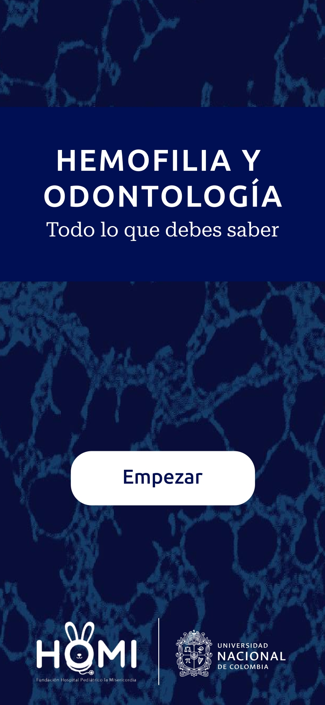
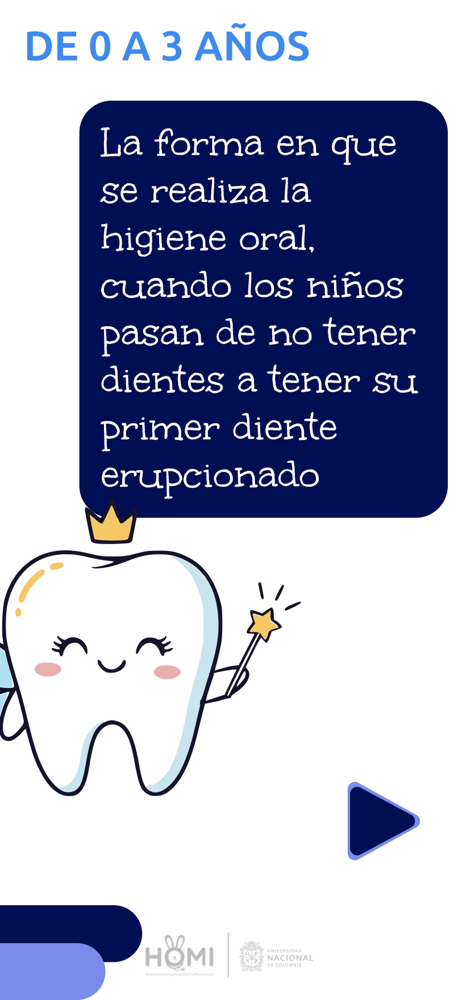
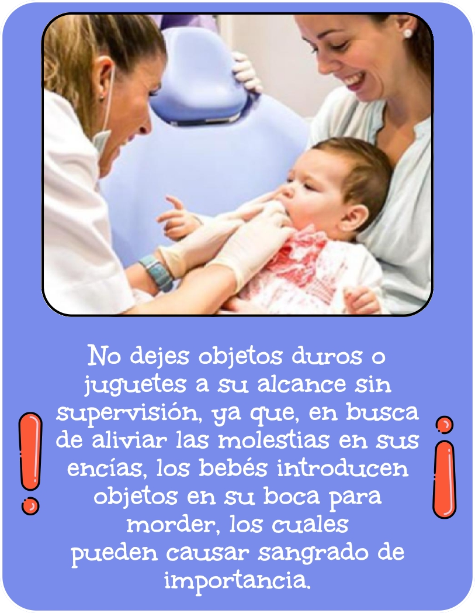

Trabajo de Grado:
Diseño, desarrollo e implementación de una aplicación móvil para el
cuidado oral del paciente pediátrico con hemofilia: enfoque de ingeniería de software y usabilidad
Estudiante: Breyner Ismael Ciro Otero
Evaluador: Prof. Germán Jairo
Hernández Pérez
Fecha: Junio de 2026
El presente informe técnico documenta los resultados finales del diseño, arquitectura y desarrollo de la aplicación móvil, una herramienta educativa e interactiva orientada al cuidado oral del paciente pediátrico con hemofilia. La aplicación fue construida para mejorar la adherencia al tratamiento y fortalecer la comunicación entre cuidadores y profesionales de la salud, aplicando rigurosamente principios de ingeniería de software y metodologías centradas en el usuario.
Diseñar, desarrollar e implementar una aplicación móvil para el cuidado oral del paciente pediátrico con hemofilia, aplicando principios de ingeniería de software y metodologías centradas en el usuario para crear una herramienta educativa e interactiva que mejore la adherencia al tratamiento y fortalezca la comunicación entre cuidadores y profesionales de la salud.
La viabilidad y justificación técnica de este proyecto se sustentan en una revisión integral de la literatura médico-odontológica. Guías pediátricas especializadas [1, 2] documentan extensivamente los desafíos inherentes al cuidado oral en pacientes hemofílicos. Investigaciones clínicas como las de Bravo y Muñoz [3] evidencian que los procedimientos odontológicos en esta población revisten una alta complejidad y frecuentemente exigen hospitalización por riesgo hemorrágico post-extracción. Por su parte, estudios como el de Avendaño Córdova et al. [4] demuestran la factibilidad de ejecutar tratamientos preventivos optimizando la terapia de reemplazo, requiriendo protocolos estrictos. En esta misma línea, Grandas Ramírez [5] concluye que el paradigma de atención debe reorientarse imperativamente hacia la prevención primaria, revelando la carencia de herramientas de educación en salud dirigidas a los cuidadores.
Para dar respuesta a esta necesidad, el presente producto de software nace como resultado de la investigación de López Aguirre y González Bejarano [6] donde el presente informe detalla la materialización e ingeniería de dicha propuesta. El contenido clínico-educativo integrado es el resultado directo de esta sinergia, operando la aplicación móvil como el habilitador tecnológico para el despliegue interactivo del conocimiento documentado en [6].
Desde la perspectiva tecnológica y del estado del arte, el ecosistema actual de mHealth (salud móvil) para el manejo de la hemofilia presenta soluciones como HemMobile® [7], SOS Hemofilia [8] y Microhealth Bleeding Disorders [9]. Aunque estas plataformas son robustas en el registro de infusiones y seguimiento de sangrados sistémicos, auditorías de mercado revelan que ninguna aborda de forma específica la profilaxis y el cuidado oral pediátrico, brecha funcional que confirma la pertinencia y el carácter innovador del presente desarrollo.
El ciclo de vida del software se estructuró bajo un enfoque metodológico híbrido, integrando fases iterativas de diseño centrado en el usuario (User-Centered Design) con prácticas formales de ingeniería de software para aplicaciones móviles [10], y alineándose estrictamente a los lineamientos normativos de usabilidad para software en salud [11]. El desarrollo se ejecutó sistemáticamente a lo largo de 16 semanas, consolidándose en las siguientes fases operativas:
| Componente | Tecnología | Versión |
|---|---|---|
| Framework principal | React Native (Expo) | SDK 55 |
| Lenguaje | TypeScript | ^5.3.3 |
| Routing/Navegación | expo-router (file-based) | ~55.0.14 |
| Gráficos vectoriales | react-native-svg | 15.15.3 |
| Animaciones | react-native-reanimated | 4.2.1 |
| Fuentes | expo-font + Google Fonts | ~55.0.7 |
| Bundler | Metro | Integrado Expo |
| Transpilación | Babel (babel-preset-expo) | ^7.25.2 |
| Plataformas destino | Android, iOS, Web | Multiplataforma |
El desarrollo de la aplicación se encuentra 100% finalizado, cumpliendo satisfactoriamente con la totalidad de los requerimientos funcionales y no funcionales establecidos al inicio del proyecto.
| ID | Requerimiento | Prioridad | Estado |
|---|---|---|---|
| RF-01 | Despliegue de una pantalla de introducción con información general sobre hemofilia y odontología | Alta | Cumplido |
| RF-02 | Integración de un flujo de onboarding educativo con slides informativos sobre hemofilia y coagulación | Alta | Cumplido |
| RF-03 | Selección del grupo de edad del paciente pediátrico (0-3, 3-5, 6-13, 14-18 años) | Alta | Cumplido |
| RF-04 | Presentación de contenido educativo personalizado según el grupo de edad seleccionado | Alta | Cumplido |
| RF-05 | Organización de temas clínicos por categorías (erupción dental, higiene oral, sangrado, trauma) | Alta | Cumplido |
| RF-06 | Integración de un diagrama dental interactivo 2D con representación anatómica de los arcos maxilar superior e inferior | Alta | Cumplido |
| RF-07 | Selección de dientes individuales con despliegue de información sobre tipo de diente y edad de erupción | Alta | Cumplido |
| RF-08 | Visualización de alertas y recomendaciones médicas con indicadores visuales de urgencia | Media | Cumplido |
| RF-09 | Navegación secuencial entre slides de contenido educativo con controles de avance y retroceso | Alta | Cumplido |
| RF-10 | Despliegue de información detallada en tarjetas con formato visual diferenciado | Media | Cumplido |
| RF-11 | Inclusión de logos institucionales (HOMI, Universidad Nacional) en la interfaz | Media | Cumplido |
| RF-12 | Soporte nativo para contenido multimedia (imágenes clínicas, ilustraciones educativas) | Alta | Cumplido |
| ID | Requerimiento | Categoría | Estado |
|---|---|---|---|
| RNF-01 | Ejecución nativa en Android e iOS utilizando una única base de código | Portabilidad | Cumplido |
| RNF-02 | Adaptabilidad de la interfaz a diferentes tamaños de pantalla (diseño responsivo) | Usabilidad | Cumplido |
| RNF-03 | Escalado proporcional de fuentes tipográficas según el ancho del dispositivo | Usabilidad | Cumplido |
| RNF-04 | Carga previa de fuentes personalizadas y recursos visuales (splash screen) | Rendimiento | Cumplido |
| RNF-05 | Respuesta fluida a interacciones táctiles mediante animaciones basadas en físicas | Usabilidad | Cumplido |
| RNF-06 | Tipado estático estricto del código fuente para prevención de errores | Mantenibilidad | Cumplido |
| RNF-07 | Fidelidad visual estricta frente a los prototipos de diseño de Figma | Usabilidad | Cumplido |
| RNF-08 | Validación clínica del contenido médico por profesionales de la salud | Confiabilidad | Cumplido |
| RNF-09 | Bloqueo de orientación en modo vertical (portrait) para garantizar integridad visual | Usabilidad | Cumplido |
| RNF-10 | Reutilización de componentes gobernados por un sistema de diseño centralizado | Mantenibilidad | Cumplido |
| RNF-11 | Compatibilidad integral con la nueva arquitectura de React Native | Rendimiento | Cumplido |
La aplicación implementa una Arquitectura en Capas (Layered Architecture) fundamentada en el modelo de componentes, estableciendo una separación estricta de responsabilidades entre la visualización, la lógica de interacción y los repositorios de información clínica. Este enfoque garantiza alta cohesión y bajo acoplamiento.
flowchart TD
subgraph Capa1 ["Capa de Presentación e Interfaz"]
Router["Enrutador Declarativo (Expo Router)"]
Screens["Vistas Dinámicas (Pantallas)"]
UI["Componentes Reutilizables (UI)"]
SVG["Motor de Renderizado Anatómico (SVG)"]
end
subgraph Capa2 ["Capa de Lógica de Aplicación"]
Logic["Controladores de Interacción (Hooks)"]
Theme["Motor de Normalización Responsiva"]
end
subgraph Capa3 ["Capa de Dominio Clínico y Datos"]
Content["Repositorio de Contenido Educativo"]
Anatomy["Modelo de Coordenadas Dentales (TeethPaths)"]
Types["Modelado de Entidades Clínicas (Interfaces TS)"]
end
Router -->|Orquesta| Screens
Screens -->|Componen| UI
Screens -->|Implementa| SVG
UI -->|Estiliza vía| Theme
Screens -->|Gestiona estado vía| Logic
Logic -->|Consulta| Content
SVG -->|Consume| Anatomy
Content -.->|Tipificado por| Types
Anatomy -.->|Tipificado por| Types
El diseño se estructura lógicamente en tres niveles:
| Patrón | Implementación | Ubicación |
|---|---|---|
| Component Pattern | Desarrollo de componentes reutilizables con propiedades tipadas | src/components/ |
| File-based Routing | Sistema de navegación declarativa basada en la jerarquía de directorios | app/ |
| Dynamic Routing | Rutas parametrizadas dinámicamente ([group], [topic]) para la
inyección de contenido |
app/age/[group]/[topic].tsx |
| Design Tokens | Variables de diseño para la centralización estandarizada de colores y tipografía | src/theme/ |
| Data-Driven UI | Separación del contenido educativo de la capa de presentación mediante una estructura de datos estricta | src/data/content.ts |
| Slide Pattern | Sistema de renderizado polimórfico para distintos tipos de pantallas de contenido | src/data/content.ts |
| Compound Component | Sub-renderizadores especializados orquestados desde un componente contenedor principal | app/age/[group]/[topic].tsx |
| Responsive Design | Algoritmo de escalado dinámico para tipografía y espacios según la resolución del dispositivo | src/theme/typography.ts |
flowchart TD
Inicio["index.tsx - Entry Point"]
Intro["intro.tsx - Pantalla de Bienvenida"]
Onboarding["onboarding.tsx - Induccion Educativa"]
Selector["age-selector.tsx - Selector de Edad"]
subgraph SG1 ["Rutas Dinamicas de Grupo Etario"]
Menu03["age/0-3/index.tsx"]
Menu35["age/3-5/index.tsx"]
Menu613["age/6-13/index.tsx"]
Menu1418["age/14-18/index.tsx"]
end
VisorTema["age/group/topic.tsx - Controlador de Tema"]
subgraph SG2 ["Renderizadores Polimorficos Secuenciales"]
SlideContent["ContentSlide - Teoria e Imagen"]
SlideDetail["DetailSlide - Tarjeta de Detalle"]
SlideInfo["InfoSlide - Modal de Alerta Medica"]
SlideDiagram["DiagramSlide - Diagrama Interactivo"]
end
Inicio -->|Redireccion Automatica| Intro
Intro -->|Boton Empezar| Onboarding
Onboarding -->|Finalizar Slides| Selector
Selector -->|Selecciona 0-3| Menu03
Selector -->|Selecciona 3-5| Menu35
Selector -->|Selecciona 6-13| Menu613
Selector -->|Selecciona 14-18| Menu1418
Menu03 -->|Selecciona Tema| VisorTema
Menu35 -->|Selecciona Tema| VisorTema
Menu613 -->|Selecciona Tema| VisorTema
Menu1418 -->|Selecciona Tema| VisorTema
VisorTema -. "Renderiza segun indice" .-> SlideContent
VisorTema -. "Renderiza segun indice" .-> SlideDetail
VisorTema -. "Renderiza segun indice" .-> SlideInfo
VisorTema -. "Renderiza segun indice" .-> SlideDiagram
VisorTema -->|Boton Volver| Menu03
VisorTema -->|Boton Inicio| Selector
Menu03 -->|Boton Volver| Selector
Para garantizar la mantenibilidad y consistencia visual de la aplicación sin comprometer el rendimiento, la interfaz de usuario se construyó sobre un sistema de componentes reutilizables con responsabilidades bien delimitadas.
Se desarrollaron componentes genéricos (Button, NextButton,
AlertBanner, TopicCard, etc.) que encapsulan la lógica visual (colores,
tipografías normalizadas para múltiples pantallas y espaciados). Esto asegura que el código de las pantallas
principales se enfoque exclusivamente en la orquestación del flujo de navegación y en el modelo de datos
clínico.
A continuación se presenta evidencia de la implementación de la interfaz gráfica, demostrando la fidelidad del diseño frente a los requerimientos de usabilidad pediátrica y la integración anatómica interactiva:



Toda la estructura temática, así como el contenido clínico y educativo de cada módulo, es provisto a través de la colaboración investigativa con López Aguirre y González Bejarano [6], quienes conceptualizaron la base pediátrica y odontológica que esta aplicación implementa de forma interactiva.
| Grupo | Temas | Total Slides |
|---|---|---|
| 0-3 años | Erupción dental, Higiene oral, Sangrado, Trauma dental | 19 slides |
| 3-5 años | Higiene oral, Alimentación saludable, Manejo de golpes | 6 slides |
| 6-13 años | Recambio dental, Higiene y ortodoncia, Cuidado en deportes | 6 slides |
| 14-18 años | Muelas del juicio, Hábitos saludables, Ortodoncia | 6 slides |
El producto final garantiza una experiencia de usuario óptima mediante la implementación efectiva de los siguientes principios:
| Principio | Implementación |
|---|---|
| Personalización por edad | Contenido adaptado a 4 grupos etarios con lenguaje y temáticas acordes a su desarrollo |
| Navegación progresiva | Flujo lineal e intuitivo desde el onboarding hasta la selección de contenido, facilitando su comprensión y uso sin requerir conocimientos técnicos previos |
| Feedback visual | Incorporación de animaciones físicas fluidas y estados de selección claros para confirmar las acciones del usuario |
| Accesibilidad tipográfica | Escalado responsivo de fuentes garantizado, asegurando legibilidad en una amplia gama de resoluciones móviles |
| Señalización de urgencia | Uso de modales diferenciados visualmente con iconografía estandarizada para destacar alertas médicas críticas |
El ciclo de desarrollo de la aplicación móvil se ha concluido con éxito, entregando un producto de software completamente funcional, estable y listo para su distribución clínica y educativa.
Arquitectura sólida orientada a la mantenibilidad: La aplicación consolida una arquitectura escalable basada en componentes modulares, estableciendo una separación estricta entre la lógica de presentación, la persistencia de datos estáticos y el sistema de diseño.
Tipado estricto como garantía de integridad: La adopción de TypeScript con interfaces polimórficas asegura un modelado de datos robusto que elimina ambigüedades en tiempo de compilación, resultando en un sistema con alta tolerancia a fallos.
Interactividad aplicada a objetivos educativos: La programación de componentes interactivos a medida demuestra una alta destreza técnica para representar interfaces anatómicas complejas de forma táctil, enriqueciendo significativamente el valor pedagógico de la herramienta para usuarios no técnicos.
Escalabilidad del dominio clínico: La implementación del patrón Data-Driven UI centraliza la gestión de la información, permitiendo que futuros administradores extiendan los grupos de edad o los temas clínicos sin necesidad de alterar la lógica estructural de la aplicación.
Preparación multiplataforma moderna: La correcta configuración y utilización de Expo SDK 55, operando bajo la nueva arquitectura de React Native, certifica un rendimiento nativo sobresaliente y asegura la viabilidad técnica a largo plazo del proyecto frente a las constantes actualizaciones de Android e iOS.